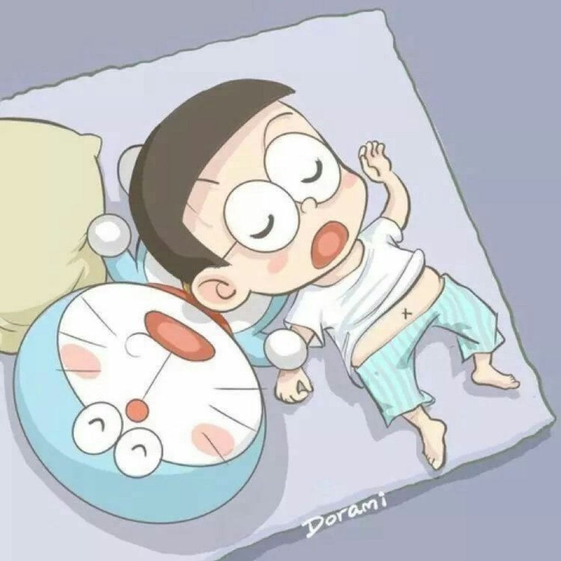

2020-4-11
5680
热度较高

原创
辩论家与沉默者
p { color: red }
这世上从没有什么三观正与不正，只有三观合与不合。
人们总是喜欢争辩，它好像一场低付出却有着高回报的博弈，喜欢在辩论胜利时那一霎间的快感，
或是对生活中不快的变态宣泄。于马斯洛层次需求理论来解释，我们处在这个和平却浮躁的大时代，
人类在满足了生理需求与安全需求之后，需求念想便上升到了尊重与自我实现。而互联网作为当代信息传播的最好媒介，
一度的成为了生活中的失败者用以满足这种念想的最优途径。
我并非是来与谁争辩的，事实上，我在面对言语暴力时一向选择沉默。这是一种逃避吗？
鲁迅先生弃医从文，从“救一个人”变为“救一群人”，却难以实现“救一类人”。
这并非机缘巧合，而是必然存在的客观规律，其本质便是大众化的思维难以追随少数人所引领的时代潮流。
具体而言，在这个法盲横行，全民“在线执法”的时代，网络上滋生出了三种“异类”。网民们称之为“键盘侠”、
“杠精”和“圣母婊”。他们的雄心壮志活在虚拟世界，或是以“自由言论”为旌旗，批判他人的观点，亦可进行“道德”声讨，
谴责无辜的大众。在他们的眼里，什么事都可以用暴力解决，在他们的心中，只有自我的认知才能奉为真理。
从古至今，人们都在客观真理中寻找自我。在我看来，自我的核心便是自我认同。
部分唯物者认为，自然科学是万物的准则，在尊重客观规律的条件下能充分地发挥人的主观能动性。
其实不然，在广义上来说，自我认同其实就是一个独立个体意识形态的集中体现。但残酷的是，瞬息万变的是世间万物，
顽固不化是人的思维。即使人类在自然科学上的造诣早已到达了解析物质结构的层次，
却始终难予以自我思维一个准确而合理的定义。因此我认为，人类潜在的能力应允主观能动性来修饰世间万物，
却绝非能从根源上改变一个人的思维。
这便不得不提到我曾犯过一个原则性错误，我曾认为这世上有一模一样的两个东西。
这一伪命题无论在自然科学或哲学都是行不通的：从微观的角度讲，万物皆可量子化，
而最微小的两个量子级单位亦难尽相同。于宏观而言，与其说人类思维是智慧生物的象征，
不如说人类思维其实是世界并发进程中机械的“进步”，而人类思维的不尽相同，在哲学世界中给予了合理性的解释，
任何事物都具有矛盾的特殊性。其实，我们没必要去尝试改变他人的想法，学会恪守自我、尊崇本心，
才是对自我思维最好的尊重。
我非常赞同卡耐基先生在《人性的弱点》中所说的一句话：“赢得争论的方法只有一个,
那就是避免争论。”诚然，我们何必要以卵击石、用自我薄弱的力量去扭转亘古难变的“真理”呢？
你所谓的“真理”，在超脱了这个世界的框架之外，一切的认知也将变得毫无意义。在这个角度上讲，
你又有什么恪守自我的意义呢？真理的存亡贵在大多数人的认知，自我的坚守是唯我的尊重，
我们不必要把这种狭义的自尊融入到他人的信条中。是的，人各有志，又何必强扭他人之志呢？
还记得冯友兰先生说过，人有四级境界，而很少有人能达到天人合一，道法自然的境界。
但在我看来，超脱于自然、功利、道德境界之外的，并非天人合一，而是某种能在四种境界中任意交互能力的境界。
它像是高位上的解析者，洞见市井人情百态，又能在穷苦大众中充当一员，遍历人间辛劳疾苦。在那样的境界下，
一切的争论将变得毫无意义，坚定的泛我意志将化为无形的新生。我们又何必要满脸愁容，唾骂世间难有伯牙子期。
我们何不保持沉默，活的潇洒呢？
愿你伟大的思维永不遭暴力的侵扰，愿你可贵的自我存一方不灭的净土。
方法论
赞赏


评论